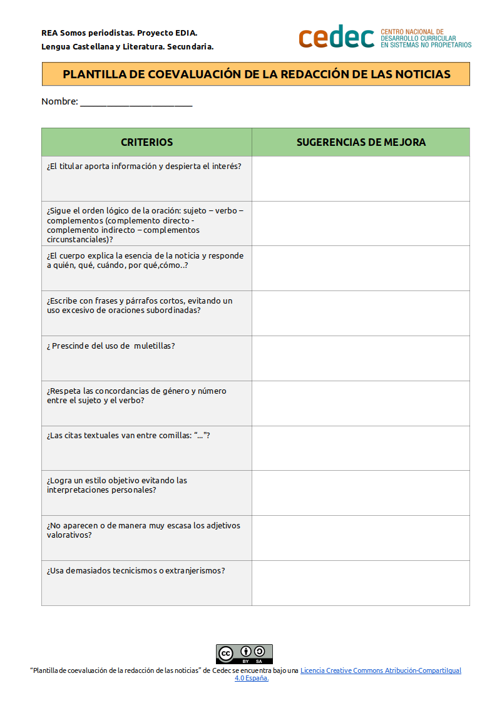

Sala de redacción
Hemos ido aprendiendo los diferentes componentes de una noticia, cómo crear titulares, los procedimientos para hacer que sean objetivas… Y ahora seguiremos centrados en este género, pues es el más sencillo de abordar para periodistas noveles como vosotros. Vamos a crear noticias para nuestros podcast con informaciones relacionadas con los países menos desarrollados. Más adelante, podréis avanzar a géneros más complejos como el reportaje y, si surge la oportunidad, preparar una entrevista que podamos grabar para nuestra radio.
Redactaremos las noticias por parejas y podemos elegir el tema (ODS) que queramos: igualdad entre hombres y mujeres, educación, medio ambiente, lucha contra la pobreza, consumo responsable... Para ello, lo primero que tendremos que hacer es buscar la información. Para llenar el hueco que deja la prensa más general debemos hacer una buena búsqueda de información en fuentes diversas y fiables. ¿Dónde podríamos buscar la información? Y... ¿Cómo asegurarnos de que sea fiable?
Una fuente de información pueden ser las páginas de diferentes ONGs que se ocupan, desde diversos puntos de vista, de la realidad de estos países que nos interesan. Todas ellas tienen en sus páginas un apartado dedicado a la información. Cada pareja del grupo, según el tema del que se ocupe, decidirá cuál o cuáles de estas ONGs pueden ser más adecuadas para encontrar la información.
Podemos buscar también en otras fuentes. De hecho buscaremos siempre más de una fuente de información (2 o 3) sobre el mismo acontecimiento, porque es importante contrastar la información para asegurarnos de que es fiable. Ya sabemos que todo lo que se publica en internet no es necesariamente cierto.
A la hora de hacer esa búsqueda rellenaremos una plantilla para recoger información para cada página que seleccionemos como fuente de información válida, fijándonos en estos aspectos:
- ¿Quién es el autor de esa página?
- ¿Se aportan datos contrastados?
- ¿Está actualizada? Ultima fecha de actualización.
Para organizar y compartir toda la información en el equipo crearemos dentro de nuestra carpeta compartida en Drive otras subcarpetas con los nombres de los temas sobre los que trabajaremos. Cada miembro del equipo mete en la carpeta que le corresponde las fichas de registro que va rellenando.
¿Ya tenemos todos los datos? ¡Es hora de redactar!
Para crear las noticias podemos utilizar la plantilla de control que aparece a continuación (descargar en formato editable odt y en pdf).
Una vez escrito el borrador debemos intercambiarlas con la otra pareja de nuestro grupo que las revisará utilizando la Plantilla de coevaluación de una noticia (descargar en formato editable odt y en pdf).

¿Qué tal ha salido? ¿Bien? ¿Os atrevéis con el siguiente nivel? Si queréis preparar un reportaje o una entrevista, os podéis guiar por las indicaciones del siguiente apartado voluntario. Tanto si lo hacéis como si os quedáis solo con vuestras noticias, ya estáis en condiciones de avanzar a la siguiente sección, donde encontraréis documentos útiles para dar formato radiofónico a todas vuestras producciones.
Unicef
Médicos sin fronteras
ACNUR
Intermon Oxfam
Save the children
Unesco
Amnistía internacional
InteRed
Mujeres en zona de conflicto
Paz y desarrollo
Asociación Al-Quds